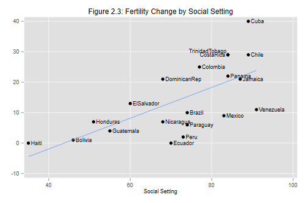

We will start with the simplest possible model, the null model, which fits just a constant. But first we read the data again, so this script can be run independently of the previous one.
. use https://grodri.github.io/datasets/effort, clear
(Family Planning Effort Data)
. regress change
Source │ SS df MS Number of obs = 20
─────────────┼────────────────────────────────── F(0, 19) = 0.00
Model │ 0 0 . Prob > F = .
Residual │ 2650.2 19 139.484211 R-squared = 0.0000
─────────────┼────────────────────────────────── Adj R-squared = 0.0000
Total │ 2650.2 19 139.484211 Root MSE = 11.81
─────────────┬────────────────────────────────────────────────────────────────
change │ Coefficient Std. err. t P>|t| [95% conf. interval]
─────────────┼────────────────────────────────────────────────────────────────
_cons │ 14.3 2.640873 5.41 0.000 8.772589 19.82741
─────────────┴────────────────────────────────────────────────────────────────
The average fertility decline in these countries between 1965 and 1975 was 14.3%. We also get standard errors and a confidence interval.
If you are wondering what these statistics mean when the 20 countries at hand are not really a random sample of the countries of the world, see the discussion of model-based inference in the notes. Briefly, we view the data as a sample from the universe of all the outcomes we could have observed in these countries in the period 1965-1970.
The next step is to try a linear regression of change on setting. We
do not need to specify a constant because it is always included, unless
we use the noconstant option
. regress change setting
Source │ SS df MS Number of obs = 20
─────────────┼────────────────────────────────── F(1, 18) = 14.92
Model │ 1201.07756 1 1201.07756 Prob > F = 0.0011
Residual │ 1449.12244 18 80.5068025 R-squared = 0.4532
─────────────┼────────────────────────────────── Adj R-squared = 0.4228
Total │ 2650.2 19 139.484211 Root MSE = 8.9726
─────────────┬────────────────────────────────────────────────────────────────
change │ Coefficient Std. err. t P>|t| [95% conf. interval]
─────────────┼────────────────────────────────────────────────────────────────
setting │ .5052063 .1307975 3.86 0.001 .2304109 .7800018
_cons │ -22.12538 9.641562 -2.29 0.034 -42.38155 -1.869208
─────────────┴────────────────────────────────────────────────────────────────
Each point in the social setting scale is associated with a fertility decline of half a percent. Compare the parameter estimates with those in table 2.3 in the lecture notes.
The anova table reproduces the results in Table 2.4.
The total sum of squares of 2650.2 has been decomposed into 1201.1 that can be attributed to social setting and 1449.1 that remains unexplained.
Let us calculate the R-squared “by hand” as the ratio of the model sum of squares to the total sum of squares.
. display 1201.08/2650.2 .45320353
Stata stores several results of the regression in system macros and
scalars. To obtain a list of everything that’s stored after running an
estimation command such as regress type
ereturn list. In particular, the sums of squares for the
model and residual are saved as e(mss) and
e(rss), and we could have calculated R-squared as
. display e(mss)/(e(mss)+e(rss)) .45320261
I recommend using the stored quantities whenever possible, because the results are more accurate and the process is less error-prone.
Almost half the variation in fertility decline can be expressed as a linear effect of social setting.
Let us try to reproduce Figure 2.3. We want to plot fertility change versus setting, labeling the points with the country names and superimposing the regression line.
This can be done using the graph twoway command to
combine two plot types (using parentheses for each plot):
scatter for the scatterplot, and lfit for the
least squares line. To label the points we use the scatter plot
mlabel option, specifying the variable that has the country
names. The only problem if you try the command so far is that you will
see some overprinting. To solve this problem we use the
mlabv option to define the position of the labels, using a
variable that sets the position as 3 o’clock by default, 11 o’clock for
Trinidad-Tobago, and 9 o’clock for Costa Rica. This produces the result
shown in Figure 2.3:
. gen pos = 3
. replace pos = 11 if country == "TrinidadTobago"
(1 real change made)
. replace pos = 9 if country == "CostaRica"
(1 real change made)
. graph twoway (scatter change setting, mlabel(country) mlabv(pos)) ///
> (lfit change setting, legend(off)), ///
> title("Figure 2.3: Fertility Change by Social Setting")
. graph export fig23.png, width(500) replace
file fig23.png saved as PNG format

Exercise: Run the simple linear regression model for fertility change as a function of program effort and plot the results.
Updated fall 2022
Updated fall 2022